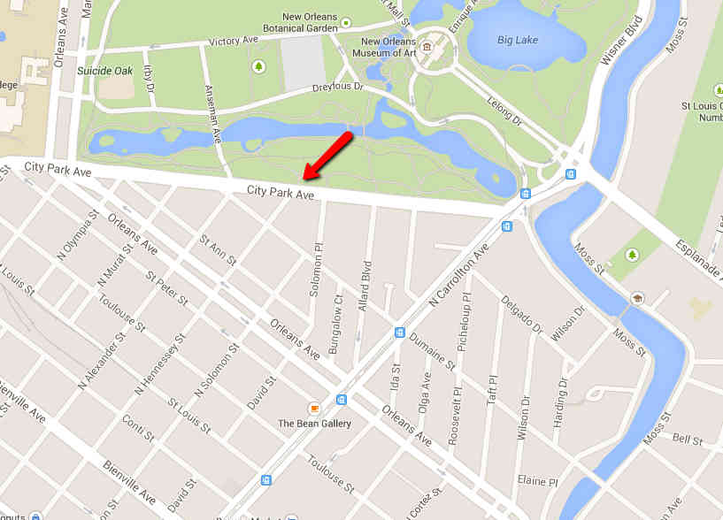
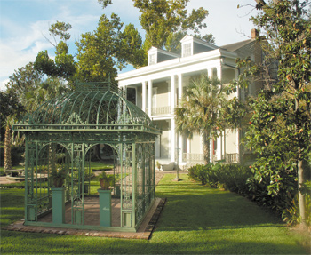
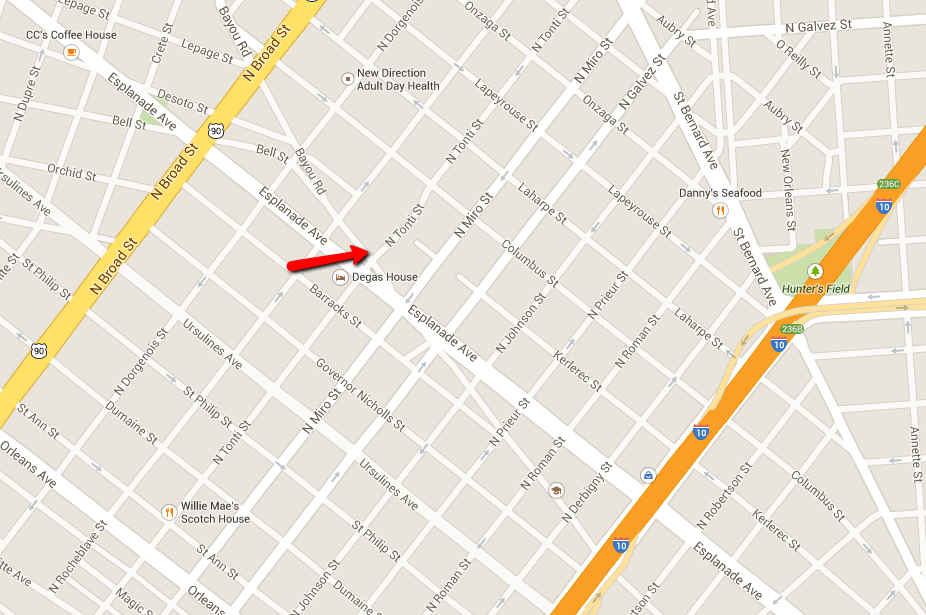

Our ceremony will begin at 4:00pm in a grove of oaks at City Park at the Corner of N. Hennessey St and City Park Ave. Parking will be available along City Park Ave. and in the surrounding neighborhood.
This will be immediately followed by a reception at Benachi House  at the corner of Esplanade and Bayou Road just 1.8 miles away. For those chosing to to drive, bussing to and from the Benachi House will be provided.
